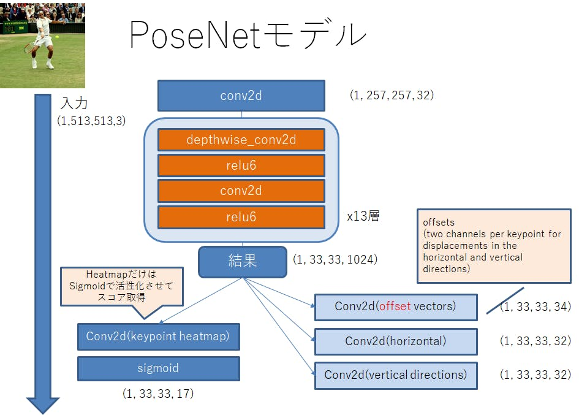

TensorflowでPosenetによる姿勢推定
概要
Posenet : https://github.com/tensorflow/tfjs-models/tree/master/posenet
を扱う
このような姿勢推定(骨格推定)は、inputされた画像の どこ座標がどの点(肘とか手首とか)にあたるかを推定している。
Posenetでは以下の17点を推定することが出来る。これらの点をKeypointと言う。
- nose
- leftEye
- rightEye
- leftEar
- rightEar
- leftShoulder
- rightShoulder
- leftElbow
- rightElbow
- leftWrist
- rightWrist
- leftHip
- rightHip
- leftKnee
- rightKnee
- leftAnkle
- rightAnkle
Keypoint を見つけ出す仕組み
参考(MobileNet版Posenetについて)
https://medium.com/tensorflow/real-time-human-pose-estimation-in-the-browser-with-tensorflow-js-7dd0bc881cd5
学習済みのMobileNetは、画像を入力すると以下の画像のような keypoint heatmap やoffset vectors 等のテンソルを出力する。
 画像中keypoint heatmap , offset vectors が格子状になっているのは、一連の処理を高速化させるためのoutputStride (メッシュ幅みたいなもの)が用意されているから。
画像中keypoint heatmap , offset vectors が格子状になっているのは、一連の処理を高速化させるためのoutputStride (メッシュ幅みたいなもの)が用意されているから。
outputStrideの数値を大きくするとメッシュが大きく切られ、処理速度は向上するが精度は落ちる。
そしてkeypoint heatmap をスコア化するためシグモイド活性化したもの→ heatmapPositions を用意する。
Keypointは以上の三要素 ( heatmapPositions , offset vectors , outputStride ) で計算されている。
keypointPositions = heatmapPositions * outputStride + offsetVectors
offset vectors について
これがPosenetの発明品のようだ
Long-range offsets , Short-range offsets , Mid-range offsets
の3種類あるが、この中でいちばん重要なものはShort-range offsetsである。
offset vectorsは基本的にShort-range offsetsしたベクトルのデータの集まりのことを言っている。
Long-range offsetsは姿勢推定では使わない。
Long-range offsets
以下は例として鼻にかけてのLong-range offsets (vector)を表したものだ。


https://arxiv.org/pdf/1803.08225.pdf より
ちなみにLong-range offsetsは姿勢推定では使っておらず(←セグメントモジュールで使われている)、姿勢推定モジュールでは以下の局所的な領域内でのベクトルを示したShort-range offsetsとMid-range offsetsを使っている。
Short-range offsets について
 Short-range offsetsはキーポイントの座標を一意的に決める各格子点を始点とするベクトル情報である。(outputStrideによって定められた格子点が10x20ある場合、1個のKeypointに対するShort-range offsetsのサイズは、各点ごとのx,y方向のベクトルそれぞれの情報を格納するので、20x10x2となる)
Short-range offsetsはキーポイントの座標を一意的に決める各格子点を始点とするベクトル情報である。(outputStrideによって定められた格子点が10x20ある場合、1個のKeypointに対するShort-range offsetsのサイズは、各点ごとのx,y方向のベクトルそれぞれの情報を格納するので、20x10x2となる)
offset vectorsは全17個のKeypoint分のShort-range offsetsをひとまとめにしたものである。(つまり格子点が10x20ある場合、サイズは20x10x34となる)
下の図では、鼻のヒートマップ付近のShort-range offsetsを参照し鼻のKeypointを検出する様子である(左肘も同様)

Mid-range offsets について
 Mid-range offsetsはKeypoint同士の位置, 接続関係を格納している。
Mid-range offsetsはKeypoint同士の位置, 接続関係を格納している。
Network Architecture
モデル構造(MobileNet利用)
現在、精度が高く速度は遅いResNet版もあるが、MobileNet版に絞る
↓はオリジナルのモデルについて
https://qiita.com/otmb/items/561a62d3413295cc744e  本ページで触れていないが、outputStrideを16とし、入力画像サイズが513なので、
((513 - 1)// 16) + 1 = 33より出力されるテンソルのサイズは1辺33となる。計算式 https://medium.com/tensorflow/real-time-human-pose-estimation-in-the-browser-with-tensorflow-js-7dd0bc881cd5
Resolution = ((InputImageSize - 1) / OutputStride) + 1
通常の畳込みを1回、後
depthwise_conv2d
relu6
conv2d
relu6
を13回繰り返し、4つのテンソルを出力し、
更にそれぞれに畳み込みを1回行った、4つのテンソルを出力する。
カーネルサイズについて
https://github.com/tensorflow/tfjs/issues/1137 https://github.com/tensorflow/tfjs/issues/1137#issuecomment-462450145multi_person_mobilenet_v1_075_float.tfliteは後述で扱う
keypoint heatmapだけは前述の通り、シグモイド活性化させるが、他のテンソルはそのまま利用する。
出力されるテンソルは keypoint, heatmap, offset vectors, horizontal, vertical directions と図では書いてあるが、
プログラム中では heatmap, offset, displacementFwd, displacementBwd このような名前の扱いになっている。
この(horizontal, vertical)もしくは(displacementFwd, displacementBwd)の正体はMid-range offsetsである。
前述の通り、この出力された4テンソルを使い骨格の座標を計算する。
しかし、最新のtfliteモデルは直接Keypointを出力するモデルを使っている...。
モデルの解析
構造や計算方式がバージョン?によって大きく変わることが分かった。
multiplierを0.75に固定し調査した。(tfliteのモデルが0.75のものしか見つからなかった)
- (オリジナル:tensorflow js版(checkpoint)
>https://github.com/tensorflow/tfjs-models/tree/master/posenet - 非公式python変換版(Protocol Buffer(.pb))
入力サイズ自由
出力4つ(heatmap, offset, mid-offsets(displacement_fwd, displacement_bwd)) >https://github.com/rwightman/posenet-python
>model-mobilenet_v1_075.pb : 5.1MB - tensorflow lite公式ページのpose_estimation
入力サイズ固定257x353 出力4つ(heatmaps, short_offsets, mid_offsets, segments) >https://www.tensorflow.org/lite/models/pose_estimation/overview#get_started multi_person_mobilenet_v1_075_float.tflite : 5.0 MB - google-coral 用のtensorflow liteモデル
これまでのものと異なり、直接Keypointsを出力するスタイル。
入力サイズ固定(ファイル名に記載)
出力4 poses(Keypoints), poses:1(keypoint_scores), poses:2(pose_scores), poses:3(空)
>https://github.com/google-coral/project-posenet >posenet_mobilenet_v1_075_353_481_quant_decoder_edgetpu.tflite : 1.5 MB >posenet_mobilenet_v1_075_481_641_quant_decoder_edgetpu.tflite : 1.7 MB >posenet_mobilenet_v1_075_721_1281_quant_decoder_edgetpu.tflite : 2.5 MB
非公式python変換版(Protocol Buffer(.pb))
ファイルサイズ
model-mobilenet_v1_075.pb : 5.1MB
(model-mobilenet_v1_101.pb : 13.3MB )
出力
heatmap_2
offset_2
displacement_fwd_2
displacement_bwd_2
構造

tensorbordを使って解析を行い、上画像中 MobilenetV1の中を表示し画像化しようと試みたが、あまりにも長大な画像になってしまい添付しない。
点検したところ、上記 モデル構造(MobileNet利用) と同じものになっていた。
tensorflow lite公式ページのpose_estimation
詳しいことがあまり載っていないが https://www.tensorflow.org/lite/models/pose_estimation/overview#get_started
ここからダウンロードしたもの。
Android, iOSに使う風だ。
今まで2つに分かれていたmid_offsets が一つにまとまって出力され、新しくsegmentsが出力されるようになった。
K210用にkmodelへ変換
Fatal: Layer DepthwiseConv2d is not supported
とエラーを引き起こしてしまった。
https://github.com/kendryte/nncase/issues/14#issuecomment-489506085
Check your DepthwiseConv2d with 3x3 kernel and 2x2 stride, there is a hardware limitation that you must use tf.pad([[0,0],[1,1],[1,1],[0,0]]) to pad your input and the use valid padding in your DepthwiseConv2d.
2x2ストライドのDepthwiseConv2d の前に tf.pad([[0,0],[1,1],[1,1],[0,0]])を置いて数合わせしてあげ、DepthwiseConv2dでのpaddingはvalidを使わなくてはいけないようだs
ファイルサイズ
multi_person_mobilenet_v1_075_float.tflite : 5.0 MB
出力
float_heatmaps
float_mid_offsets
float_segments
float_short_offsets
構造
https://github.com/tensorflow/tensorflow/blob/master/tensorflow/lite/tools/visualize.py を使用し中身を拝見した。visualize.py導入まとめは後述する。
構造自体は今までのものと大きく変わらない
multi_person_mobilenet_v1_075_float.tflite.html
入力、conv2dの後
depthwise_conv2d
relu6
conv2d
relu6
を13回繰り返し、 displacement_fwdとdisplacement_bwdをconv2dをした後くっつけてる。(ここだけ今までと異なる)
google-coral 用のtensorflow liteモデル
これまでのものと異なり、直接Keypointsを出力するスタイル。
上のpose_estimationと比べ、とてもシンプルになっているが、何が起きているのか分からない。
Edge-tpu ライブラリを探る必要があるかもしれない。
https://github.com/google-coral/project-posenet/blob/master/pose_engine.py
出力
poses(Keypoints)
poses:1(keypoint_scores)
poses:2(pose_scores)
poses:3(空)
ファイルサイズ
posenet_mobilenet_v1_075_353_481_quant_decoder_edgetpu.tflite : 1.5 MB
posenet_mobilenet_v1_075_481_641_quant_decoder_edgetpu.tflite : 1.7 MB
posenet_mobilenet_v1_075_721_1281_quant_decoder_edgetpu.tflite : 2.5 MB
構造
入力サイズ353x481の
posenet_mobilenet_v1_075_353_481_quant_decoder_edgetpu.tflite について
posenet_mobilenet_v1_075_353_481_quant_decoder_edgetpu.tflite.html
nputs/Outputs
inputs
3 sub_2 UINT8 [1, 353, 481, 3]
outputs [4, 5, 6, 7]
4 poses FLOAT32 [1, 10, 17, 2]
5 poses:1 FLOAT32 [1, 10, 17]
6 poses:2 FLOAT32 [1, 10]
7 poses:3 FLOAT32 []
Tensors
index name type shape buffer quantization
0 MobilenetV1/heatmap_2/BiasAdd UINT8 [1, 23, 31, 17] 0 {'scale': [0.047059], 'zero_point': [128], 'details_type': 'NONE', 'quantized_dimension': 0}
1 MobilenetV1/offset_2/BiasAdd UINT8 [1, 23, 31, 34] 0 {'scale': [0.392157], 'zero_point': [128], 'details_type': 'NONE', 'quantized_dimension': 0}
2 concat UINT8 [1, 23, 31, 64] 0 {'scale': [1.387576], 'zero_point': [117], 'details_type': 'NONE', 'quantized_dimension': 0}
3 sub_2 UINT8 [1, 353, 481, 3] 0 {'scale': [0.007812], 'zero_point': [128], 'details_type': 'NONE', 'quantized_dimension': 0}
4 poses FLOAT32 [1, 10, 17, 2] 7 {'min': [-10.0], 'max': [10.0], 'details_type': 'NONE', 'quantized_dimension': 0}
5 poses:1 FLOAT32 [1, 10, 17] 2 {'min': [-10.0], 'max': [10.0], 'details_type': 'NONE', 'quantized_dimension': 0}
6 poses:2 FLOAT32 [1, 10] 6 {'min': [-10.0], 'max': [10.0], 'details_type': 'NONE', 'quantized_dimension': 0}
7 poses:3 FLOAT32 [] 8 {'min': [-10.0], 'max': [10.0], 'details_type': 'NONE', 'quantized_dimension': 0}
Ops
index inputs outputs builtin_options opcode_index
0 [3] [0, 1, 2] None CUSTOM (0)
1 [0, 1, 2] [4, 5, 6, 7] None CUSTOM (1)
CUSTOMの正体が謎
参考文献
- https://arxiv.org/abs/1803.08225
- https://arxiv.org/pdf/1803.08225.pdf
- https://arxiv.org/abs/1701.01779